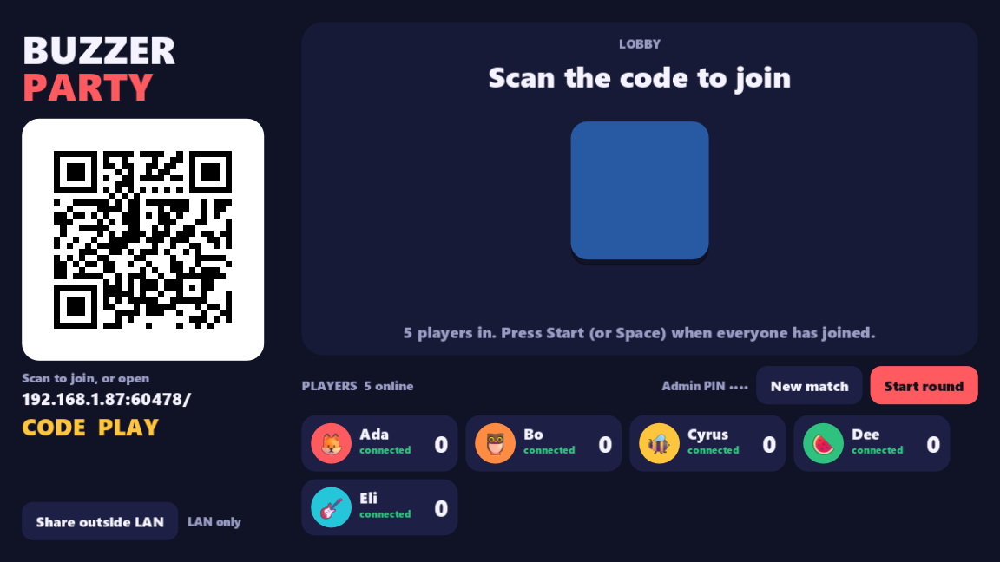
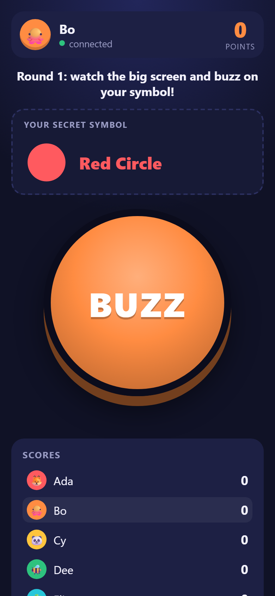

A pure-GDScript addon for Godot 4
Turn a Godot 4 game into the host for a room full of phone controllers.
Players scan a QR code on the big screen; their phone's browser loads a controller page served by the game itself. No app install, no Node, no relay server, no native binaries. Jackbox-style, with the game as the authority.
- Godot 4.3+ (tested 4.7.1)
- Pure GDScript
- MIT


What joining looks like
Waiting for players…
A room filling up, simulated. The QR is real — generated by the addon's own GDScript encoder, and it points at this repository if you want to scan it.
How it works
Enable the addon
Copy addons/phone_mass_controllers/ into your project, enable the plugin, and
add a PMCHost node pointing at a folder of plain HTML/JS — your controller page.
Show the QR on screen
host.qr_texture() renders a join QR in pure GDScript. Put it on a
TextureRect next to host.join_url() for the rare manual typist.
Phones join via browser
The camera app scans the code, the game serves the page, and a WebSocket opens on the same port. From then on they're players — named, rejoinable, kickable — not raw sockets.
What's in the box
One port, HTTP + WebSocket
Its own RFC 6455 server on TCPServer — masking, fragmentation, ping/pong,
binary frames — non-blocking with a per-frame I/O budget, so a slow phone can't stall the
game. The same port serves your page, the SDK, the QR PNG and the socket, so a single tunnel
hostname works. No dependencies.
Players, not sockets
Random rejoin tokens, a grace period for drops, and tombstones that restore a returning
player's id and meta. Join codes, max players, kick/ban, "replaced by another
tab" detection, and PIN-gated admin — the lobby bookkeeping a party game actually needs.
Private by default
host.send(player, data) targets one phone; broadcast(data, filter)
reaches the rest. JSON for convenience, or raw binary frames passed through untouched —
FlatBuffers-friendly for big payloads.
QR encoder built in
A pure-GDScript QR generator covering all 40 versions and every error-correction level,
checked against ZXing, jsQR and the qrcode npm package. The join QR for your
game is one call away — as an Image or an ImageTexture.
One click beyond the LAN
host.start_tunnel() fetches a checksum-verified cloudflared,
opens a Cloudflare Quick Tunnel (no account), waits for DNS, then swaps the QR to an
https://…trycloudflare.com URL and turns on a join code. Friends on other
networks can play too.
pmc.js controller SDK
A zero-dependency ES module the host serves at /pmc/pmc.js. Reconnect with
jittered backoff, clock sync for fair timing, vibrate() and screen-wake-lock
helpers, and a saved token so a refresh keeps your seat. No build step.
Lobby helpers
PMCQueue, PMCVote (majority, vetoes, timeout) and
PMCRotation (winner-stays / loser-stays / strict) — pure-logic pieces lifted
out of a real party game, fully unit-tested.
Proven under load
Benchmarked on loopback at 200 phones × 60 msg/s — ~9,500 messages a second, zero lost, 60 fps host. A normal party game sits far below the first busy row. Editor dock included for host status and a test tunnel.
Quickstart
Copy addons/phone_mass_controllers/ into your project and enable
Phone Mass Controllers under Project → Project Settings → Plugins.
Then this is the whole game side:
extends Node
@onready var host := PMCHost.new()
func _ready() -> void:
host.controller_dir = "res://controller" # your index.html — served at "/"
host.admin_pin = "2468"
add_child(host)
host.player_joined.connect(func(p): print(p.name, " joined"))
host.player_rejoined.connect(func(p): print(p.name, " is back (id ", p.id, ")"))
host.message_received.connect(_on_message)
host.start()
$QR.texture = host.qr_texture() # show this on the big screen
$URL.text = host.join_url()
func _on_message(player: PMCPlayer, data) -> void:
if data is Dictionary and data.get("type") == "buzz":
player.meta["score"] = player.meta.get("score", 0) + 1
host.send(player, {"type": "you_scored", "score": player.meta.score}) # private
host.broadcast({"type": "scores"}) # everyone<button id="buzz">BUZZ</button>
<script type="module">
import { connect, vibrate } from '/pmc/pmc.js';
const pmc = connect({ name: prompt('Your name?') });
pmc.on('message', (d) => console.log(d));
buzz.onpointerdown = () => {
pmc.send({ type: 'buzz' });
vibrate(20);
};
</script>
Players outside your LAN? One more line — host.start_tunnel() — and the QR swaps
itself to a public https URL with a join code. The
README
covers exports, the tunnel, and the full API; SPEC.md
is the wire protocol.
Honest caveats
This is a party-room host, not a service. It earns its keep on a couch, not at scale.
-
Quick-tunnel URLs are ephemeral. Every
start_tunnel()gets a new*.trycloudflare.comaddress, free and account-less but strictly best-effort — no uptime guarantee. Great for a game night; not a hosted endpoint. Named tunnels, Tailscale Funnel or a real relay are tracked as open issues. -
Plain LAN http isn't a secure context. Screen wake lock and a few other web
APIs need https, so on
http://192.168.x.xa phone can still doze off mid-game. The tunnel URL is https and gets wake lock back. -
iOS can't vibrate. Safari on iPhone has no
navigator.vibrate;vibrate()feature-detects and quietly returnsfalsethere. -
Backgrounded phones go quiet. Mobile browsers suspend WebSockets in
background tabs and on lock screens. The SDK reconnects when the page returns, and
grace_secondskeeps the player's seat (and score) warm meanwhile. - Your Wi-Fi has to allow it. LAN play needs a network without client isolation — many "guest" and campus APs block device-to-device traffic, which is exactly what this is.